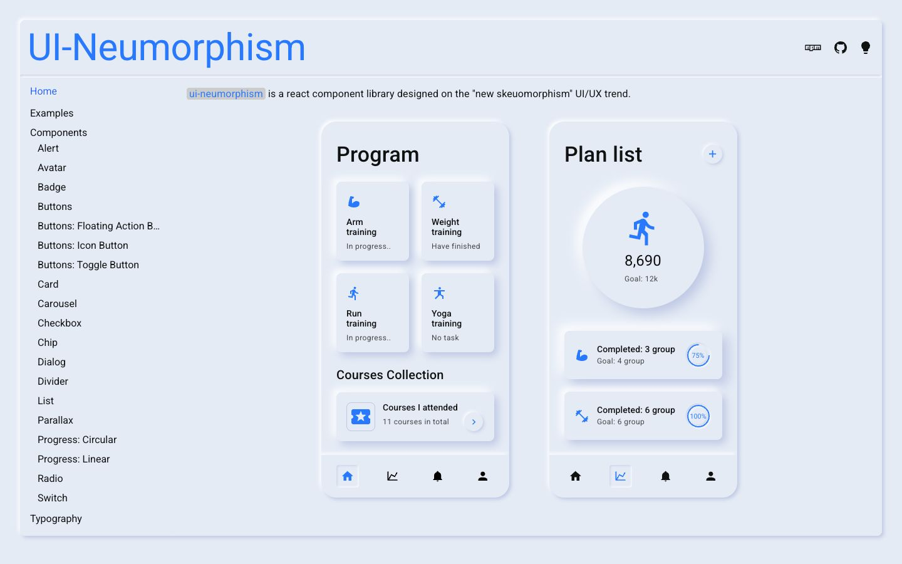

References / Website / 365
ui-neumorphism documentation
The documentation site of a 2020 React component library, laid out as two fitness-app screens on one pale surface.
- Source
- ui-neumorphism
- Creator
- AKAspanion (GitHub user)
- Style
- Neumorphism (agent-proposed, not yet reviewed by a person)
- Moods
- Soft, calm, tactile
- Evidence
- Captured with
tools/capture.mjs(headless Chrome, 1440 × 900) on 28 September 2026 and inspected. The screenshot shows the first viewport; the measurement covers up to four screens. - Reviewed
- Rights
- Third-party work, stored with credit for commentary. License: unverified. Rights policy
Context
The library describes itself as “a react component library designed on the ‘new skeuomorphism’ UI/UX trend”. Repository created on 11 May 2020, MIT License.
Observed
- A pale blue-gray page with a raised frame around the whole layout and a large blue “UI-Neumorphism” title.
- Two phone-sized cards (“Program”, “Plan list”) hold raised tiles, a large raised circle with a runner icon and “8,690”, and raised list rows with thin blue progress rings.
- In each bottom bar the active icon sits in a small pressed square.
- One blue accent for icons and links; text is near-black sans-serif (Roboto-like). A plain text list of components runs down the left.
Why it belongs
A faithful web translation of the Dribbble-era fitness concepts, with state shown as pressed versus raised.
Measured: shadows on 70 % of boxes (median offset 2.8 px, median blur 5 px, none hard), borders on 5 %, median radius 8 px.
Measured
Machine-extracted by tools/extract-traits.js on . Full measurement.
- Type families
- Roboto (61%), Consolas (39%)
- Type scale ratio
- 1.33
- Median radius
- 8 px
- Mean chroma
- 0.09
- Palette
- #e4ebf5 83%
- #000000 11%
- #669900 3%
- #0077aa 1%
- #dd4a68 1%
- #2979ff 1%
- #999999 0%
- #708090 0%

